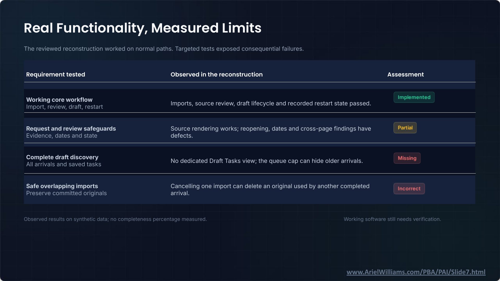

It Works: Agentic Coding and Legal Technology · Slide 7 of 12
Real Functionality, Measured Limits
Slide snapshot captured · Ariel Williams


Text transcript
The reviewed reconstruction worked on normal paths. Targeted tests exposed consequential failures.
| Requirement tested | Observed in the reconstruction | Assessment |
|---|---|---|
| Working core workflow Import, review, draft, restart |
Imports, source review, draft lifecycle and recorded restart state passed. | Implemented |
| Request and review safeguards Evidence, dates and state |
Source rendering works; reopening, dates and cross-page findings have defects. | Partial |
| Complete draft discovery All arrivals and saved tasks |
No dedicated Draft Tasks view; the queue cap can hide older arrivals. | Missing |
| Safe overlapping imports Preserve committed originals |
Cancelling one import can delete an original used by another completed arrival. | Incorrect |
Observed results on synthetic data; no completeness percentage measured.
Working software still needs verification.
Slide footer: www.ArielWilliams.com/PBA/PAI/Slide7.html